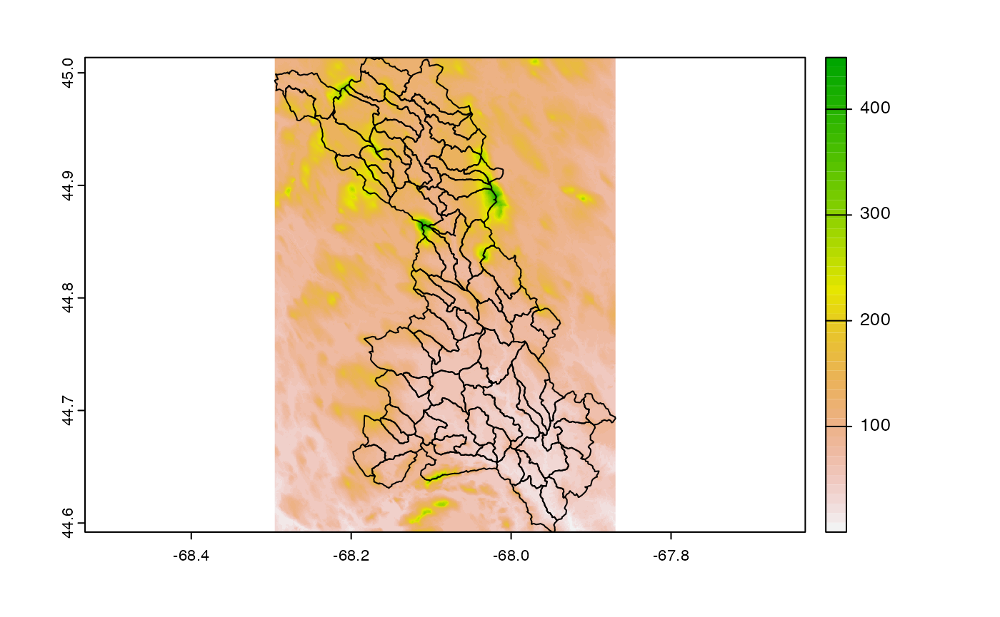
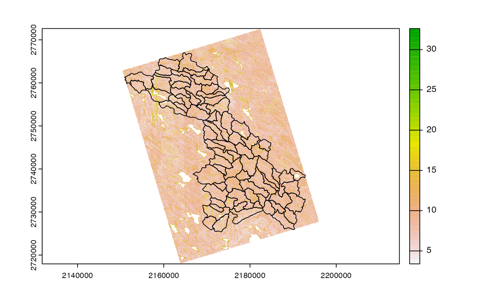
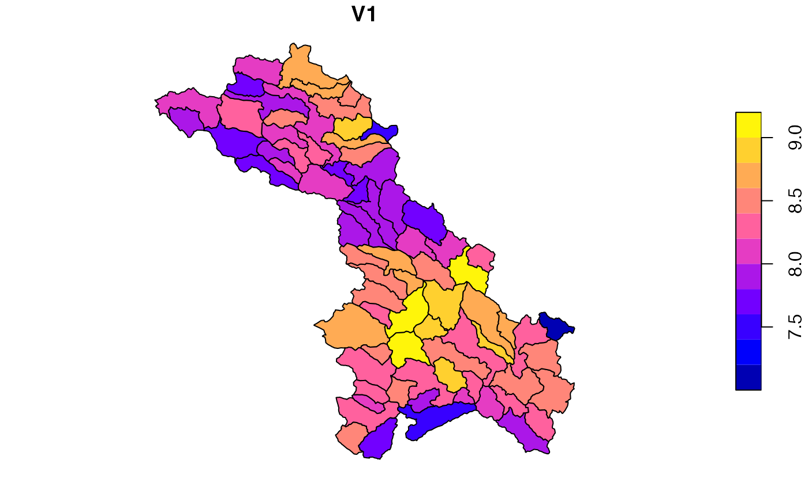

Getting Catchments
We can connect to the Lynker AWS s3 holdings to extract the refactored and aggregated catchments upstream of USGS gage ID: 01022500.
cats <- sf::read_sf("/vsis3/formulations-dev/CAMELS20/camels_01022500_2677104/spatial/hydrofabric.gpkg", "catchments")Getting Elevation
Using the VRT produced for hydrofabric work and hosted via Github Pages, we can extract the needed 30m DEM (3DEP 1 - 1 arcsecond).
elev <- rast("/vsicurl/https://mikejohnson51.github.io/opendap.catalog/ned_USGS_1.vrt")
dem <- crop(elev, project(vect(cats), crs(elev)))
Compute TWI
Using the in-memory elevation data we can write a quick function to compute and save a TWI grid:
build_twi <- function(dem, outfile = NULL) {
writeRaster(dem, "dem.tif", overwrite = TRUE)
gdal_utils("warp",
source = "dem.tif",
destination = "dem_proj.tif",
options = c(
"-of", "GTiff",
"-t_srs", "EPSG:5070",
"-r", "bilinear"
)
)
wbt_breach_depressions("dem_proj.tif", "dem_corr.tif")
wbt_md_inf_flow_accumulation("dem_corr.tif", "sca.tif")
wbt_slope("dem_proj.tif", "slope.tif")
wbt_wetness_index(
"sca.tif",
"slope.tif",
'fin.tif'
)
gdal_utils("translate",
source = "fin.tif",
destination = outfile,
options = c("-co", "TILED=YES",
"-co", "COPY_SRC_OVERVIEWS=YES",
"-co", "COMPRESS=DEFLATE"))
unlink("dem.tif")
unlink("dem_proj.tif")
unlink("dem_corr.tif")
unlink("sca.tif")
unlink("slope.tif")
unlink("fin.tif")
return(outfile)
}
file <- build_twi(dem, outfile = "../private/twi.tif")
Summarize to catchment
We next compute a catchment level mean TWI using zonal.
o <- zonal::execute_zonal(file, cats, "ID")
Map to NWM grid
The remaining workflow is representative of a process that might update frequently in a lumped formulation (e.g. soil moisture) creating the need to map values back to a common model grid. That is the reason a simple resample/regrid is not possible.
Materialize the grid:
nwm_1km <- materilize_grid(
ext = ext(-2303999.62876143, 2304000.37123857, -1920000.70008381, 1919999.29991619),
diminsion = c(3841, 4608),
projection = 'PROJCS["Sphere_Lambert_Conformal_Conic",GEOGCS["GCS_Sphere",DATUM["D_Sphere",SPHEROID["Sphere",6370000.0,0.0]],PRIMEM["Greenwich",0.0],UNIT["Degree",0.0174532925199433]],PROJECTION["Lambert_Conformal_Conic"],PARAMETER["false_easting",0.0],PARAMETER["false_northing",0.0],PARAMETER["central_meridian",-97.0],PARAMETER["standard_parallel_1",30.0],PARAMETER["standard_parallel_2",60.0],PARAMETER["latitude_of_origin",40.000008],UNIT["Meter",1.0]];-35691800 -29075200 126180232.640845;-100000 10000;-100000 10000;0.001;0.001;0.001;IsHighPrecision'
)Define Weight Map
(w <- weighting_grid(nwm_1km, cats, "ID"))## ID cell coverage_fraction
## 1: cat-3 4716637 0.07492989
## 2: cat-3 4716638 0.57502741
## 3: cat-3 4716639 0.04904574
## 4: cat-3 4720478 0.11056144
## 5: cat-3 4720479 0.98024553
## ---
## 1316: cat-222 4651331 0.79211766
## 1317: cat-222 4651332 0.55743623
## 1318: cat-222 4655171 0.07673281
## 1319: cat-222 4655172 0.06575897
## 1320: cat-222 4655173 0.16672505Inject values
dt <- merge(w,
st_drop_geometry(o)[, c("ID", "V1")],
by = "ID"
)
# Define summary function:
FUN <- function(x, w) {
sum((x * w), na.rm = TRUE) / sum(w, na.rm = TRUE)
}
# apply FUN to 'pop2019' grouped by gID
exe <- dt[, lapply(.SD, FUN = FUN, w = coverage_fraction),
by = "cell",
.SDcols = "V1"
]
# Inject TWI data with into grid
nwm_1km[exe$cell] <- exe$V1